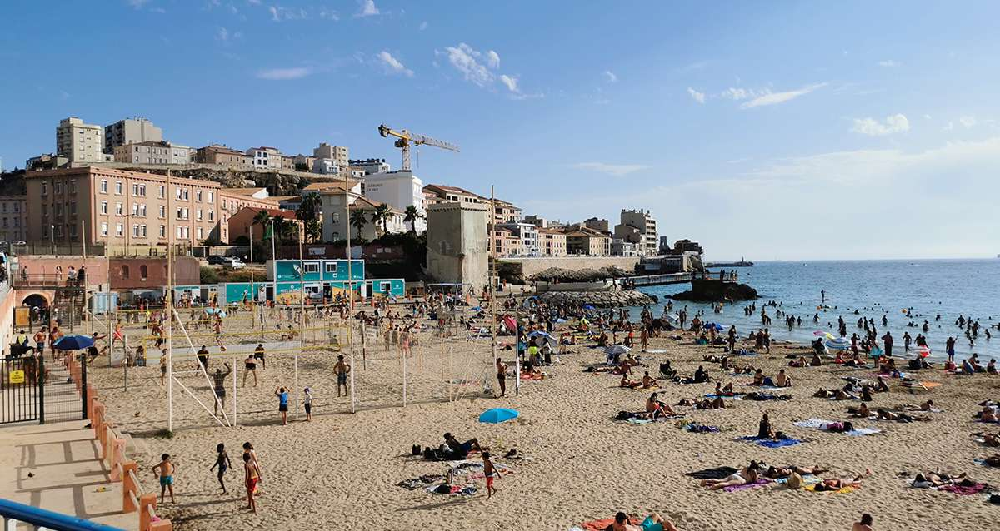
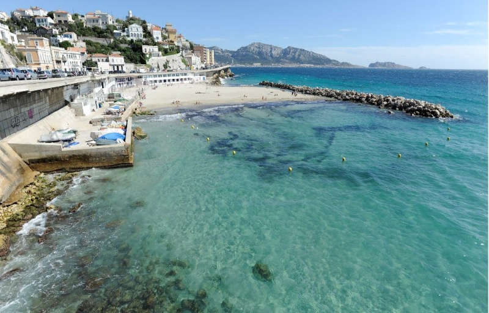
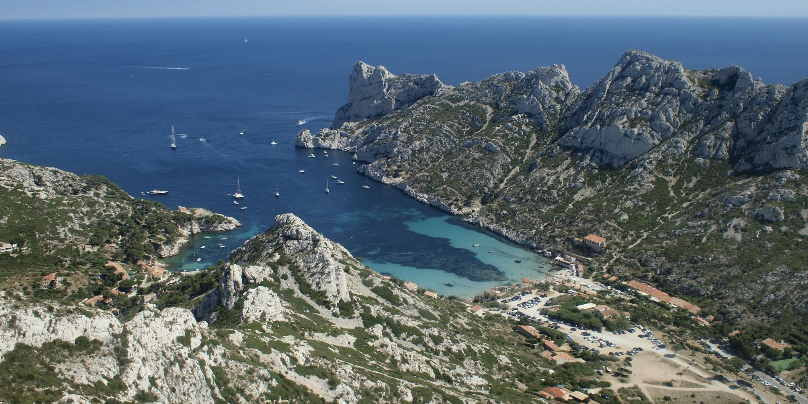

Plages
Découvrez les Plages de Marseille : Une Parenthèse Ensoleillée en Bord de Mer 
Bienvenue sur la côte méditerranéenne où le soleil se mêle harmonieusement à la douce brise marine, créant l'atmosphère parfaite pour une escapade balnéaire.
Marseille, ville emblématique de la Provence, offre un littoral exceptionnel, ponctué de plages diverses qui séduisent les visiteurs du monde entier.
Plages Iconiques à Marseille :
Plage des Catalans :

Nichée au cœur de la cité phocéenne, cette plage de sable fin offre une vue imprenable sur le Vieux-Port.
L'endroit idéal pour se détendre au soleil tout en admirant les bateaux colorés qui se balancent doucement sur les eaux méditerranéennes.
Plage du Prophète :

Cette plage pittoresque est réputée pour son sable blanc et son eau cristalline.
Bordée de palmiers, elle invite à la relaxation et à la baignade dans une atmosphère paisible, loin de l'agitation urbaine.
Plage de la Pointe Rouge :

Destination prisée des amateurs de sports nautiques, cette plage animée propose une gamme d'activités telles que la voile, le kayak et la plongée.
Elle séduit également les familles grâce à ses eaux peu profondes et son ambiance conviviale.
Plage du Prado :

Étendue de sable longeant le célèbre parc du Prado, cette plage est le lieu idéal pour les amateurs de sports en plein air.
Volleyball, beach soccer et jogging sont au rendez-vous, avec en prime une vue magnifique sur les îles du Frioul.
Plage de la Calanque de Sormiou :

Pour une expérience plus sauvage, cette plage de galets nichée au cœur d'une calanque offre un paysage préservé et une mer d'un bleu profond.
Accessible après une petite randonnée, elle récompense les visiteurs par une tranquillité unique.
Conclusion:
Que vous soyez en quête de farniente, d'activités nautiques ou d'exploration naturelle, les plages de Marseille vous promettent une escapade ensoleillée inoubliable.
Plongez dans l'authenticité méditerranéenne et laissez-vous charmer par la diversité des rivages marseillais.